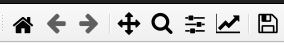

General Notes on using the pipeline¶
This section contains general nice-to-know information on useful features of the pipeline.
Controlling the plots displayed with Matplotlib.¶
The pipeline produces a large array of quality assesment plots. All of these are displayed using Matplotlib. All the plots have a menu bar that gives you acess to a wide range of options. You can zoom in and out, save the plot, set limits for the axes, limit image contrast, and many more. How the menu looks for different systems varies. For Linux Ubuntu, the menu looks like this (located in upper left corner):
{kind=link}
For your system the menu might look different, but the options are pretty much the same.
Spectral axis vs. Spatial axis¶
The software and the docs uses the terms spectral axis and spatial axis to refer to the two axes of the 2D spectrum. The spectral axis is the axis along which the wavelength values are displayed, and the spatial axis is the axis along which the spatial position of the object is displayed:
{kind=link}
Overall pipeline architecture¶
In a broad sense, there are three stages of the data processing, all explained in separate figures. The diamond shapes in the figures represent different pipeline routines that are called directly from the command line, solid arrows are hard-dependencies (must-have), dashed arrows are soft-dependencies (can use) and the rectangles represent input files and pipeline products.
{kind=link}
Step 1 - processing raw data. In this step, all the raw observation and calibration frames are used to construct calibrated 2D spectra. After this step, all procedures are performed directly on the calibrated 2D spectra, and the raw frames are no longer used.¶

Step 2 - further processing of the calibrated 2D spectra. In this step, the user can deploy cosmic-ray removal, sky-background subtraction, and crop the spectra. All procedures alter the 2D spectra in place. All of the steps are optional, but there are some dependencies — these are described in the figure.¶
{kind=link}
Step 3 - 1D spectrum extraction. In this step, objects are traced, extracted, flux calibrated and combined (if several spectra of the same object exist).¶